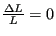

Next: Incremental (visco)plasticity: multiplicative decomposition Up: Materials Previous: Hyperelastic and hyperfoam materials Contents
Deformation plasticity is characterized by a one-to-one (bijective) relationship between the strain and the stress. This relationship is a three-dimensional generalization of the one-dimensional Ramberg-Osgood law frequently used for metallic materials (e.g. in the simple tension test) yielding a monotonic increasing function of the stress as a function of the strain. Therefore, deformation plasticity is very well suited to model the relation between the Cauchy (true) stress and the strain. Because tensile and compressive test results coincide well when plotting the Cauchy stress versus the logarithmic strain (soon to be defined), these quantities are generally used in the deformation plasticity law.
The implementation in CalculiX (keyword card *DEFORMATION PLASTICITY), however, uses the relationship to model the dependence of the Cauchy (true) stress on the Eulerian strain. For all practical purposes, the Eulerian strain coincides with the logarithmic strain. For a tensile test specimen, with initial length L, initial cross section  , final length
and final cross section A, loaded by a force F, the Cauchy stress
, final length
and final cross section A, loaded by a force F, the Cauchy stress  , the logarithmic strain
and the Eulerian strain
satisfy:
, the logarithmic strain
and the Eulerian strain
satisfy:
| (306) |
| (307) |
| (308) |
The difference between the logarithmic strain and the Eulerian strain is about 1.3 % for an Engineering strain (indeed, in the formula above corresponds to the first three terms of a Taylor series of about ). The user should give the Ramberg-Osgood material constants directly (by plotting a Cauchy stress versus Eulerian strain curve and performing a fit).